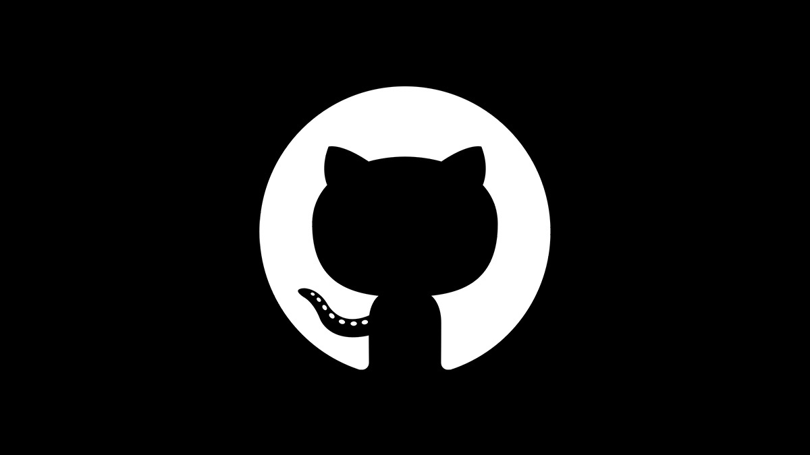

Навыки
About Me
Здравствуйте! Я Вадим Харовюк, Java-разработчик с богатым опытом в создании веб-приложений. Специализируюсь на работе с фреймворком Spring. За свою карьеру я реализовал множество разноплановых проектов, включая сложные банковские системы, интернет-магазины, клинику для управления медицинскими записями, а также другие коммерческие приложения. Моя цель — создавать надежные, масштабируемые решения, которые делают жизнь пользователей удобнее и продуктивнее.
- Spring Framework
- Model-View-Controller (MVC)
- Docker
- Spring Security
- Spring Cloud
- Spring Boot
- Kafka
- Microservices
- Hibernate
- PostgreSQL
- Redis
- RabbitMQ
- Git
- REST API
- Maven
Selected Works

Media Store
Media Store - это интернет-магазин, предлагающий широкий ассортимент электронных устройств. Удобная навигация по каталогу, разнообразные способы оплаты и быстрая доставка делают покупки электроники легкими и комфортными для пользователей.
View ProjectMilanaRestoran
MilanaRestoran - это современный ресторан, где клиенты могут легко забронировать столик онлайн или заказать доставку блюд на дом. Удобный интерфейс и широкий выбор меню делают процесс бронирования и заказа простым и быстрым, предоставляя клиентам максимальный комфорт.
View ProjectFlower Internet Shop
Flower Internet Shop - это онлайн-магазин с богатым выбором цветочной продукции. Пользователи могут создать личный кабинет для удобного управления покупками, оформить заказ с доставкой, добавить товары в корзину и воспользоваться множеством вариантов оплаты через различные банки. Проект делает процесс покупки цветов легким и удобным для всех.
View ProjectHospital Clink
Hospital Clink - это современная клиника, где пользователи могут легко зарегистрироваться онлайн, оформить карту посетителя и записаться на прием к доктору. Система позволяет удобно следить за историей диагнозов и рекомендациями врачей, делая заботу о здоровье доступной и технологически продвинутой.
View ProjectLucky Bank
Lucky Bank - это инновационная банковская система, где клиенты могут зарегистрироваться и оформить карту, воспользоваться депозитными и кредитными услугами. Система поддерживает удобные переводы с карты на карту, а также предоставляет API для сторонних сервисов оплаты. Встроенная поддержка клиентов и современный функционал делают Lucky Bank надежным и доступным финансовым инструментом.
View Project